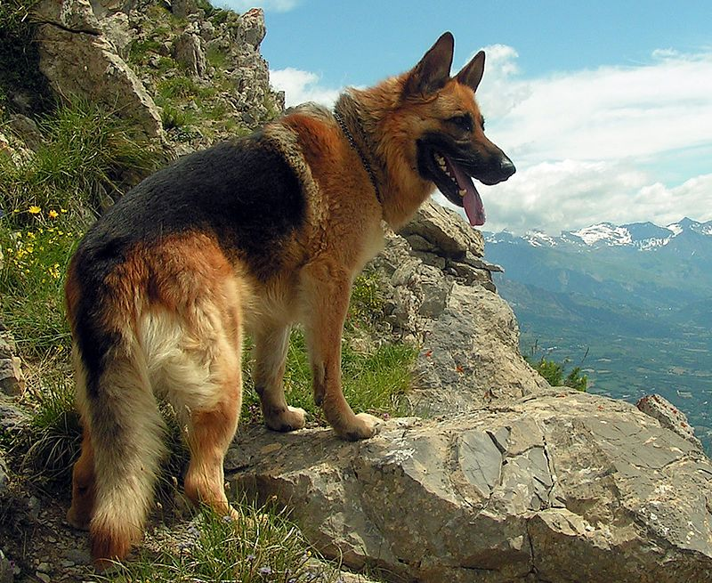

The German Shepherd (German: Deutscher Schäferhund) is a breed of medium to large-sized working dog that originated in Germany. The breed's officially recognized name is German Shepherd Dog in the English language (sometimes abbreviated as GSD). The breed was once known as the Alsatian in Britain and Ireland. The German Shepherd is a relatively new breed of dog, with their origin dating to 1899. As part of the Herding Group, German Shepherds are working dogs developed originally for herding sheep. Since that time however, because of their strength, intelligence, trainability, and obedience, German Shepherds around the world are often the preferred breed for many types of work, including disability assistance, search-and-rescue, police and military roles, and even acting.
Description
German Shepherds are medium to large-sized dogs. The breed standard height at the withers is 60–65 cm (24–26 in) for males, and 55–60 cm (22–24 in) for females. German Shepherds are longer than tall, with an ideal proportion of 10 to 8 1/2. The AKC official breed standard does not set a standard weight range. They have a domed forehead, a long square-cut muzzle with strong jaws and a black nose. The eyes are medium-sized and brown with a lively, intelligent and self-assured look. The ears are large and stand erect, open at the front and parallel, but they often are pulled back during movement. A German Shepherd has a long neck, which is raised when excited and lowered when moving at a fast pace. The tail is bushy and reaches to the hock.
German Shepherds have a two-layer coat which is close and dense with a thick undercoat. The coat is accepted in two variants; medium and long. The long-hair gene is recessive, making the long-hair variety rarer. Treatment of the long-hair variation differs across standards; they are accepted but not competed with standard coated dogs under the German and UK Kennel Clubs while they can compete with standard coated dogs but are considered a fault in the American Kennel Club. The FCI accepted the long-haired type in 2010, listing it as the variety b—while short-haired type is listed as the variety a.